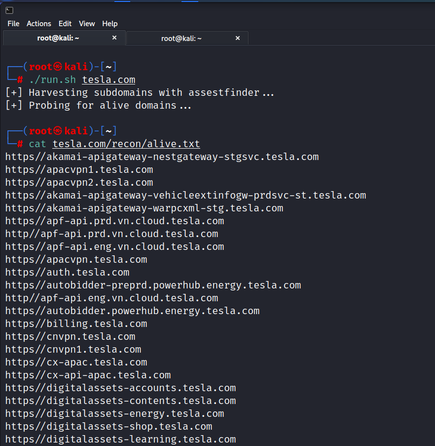

We have already installed httpprobe
for httprobe:
`go install github.com/tomnomnom/httprobe@latest`
or
`sudo apt -y install httprobe`
Will use httpproble to ensure if the host is alive or not.
cat tesla.com/recon/final.txt | httprobe -s -p https:443 | sed 's/https\?:\/\///' | tr -d ':443'
where tr is for truncate or translate


Now we got the alive domains and got something to we can enumerate on and can simply use grep on something like
dev
testing
stag
admin